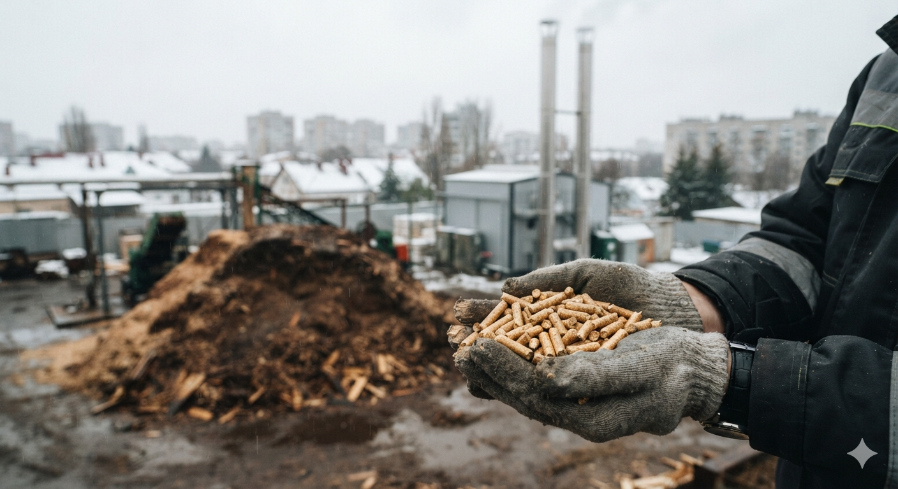

АКТ 01 // ВХІД У ПРОБЛЕМУ
Біомаса для твердого біопалива: Виклики енергетики України
01 / 08

🇺🇦
01_hero_problem.png
Енергетичні виклики України: дефіцит викопного газу та перетворення мокрих відходів лісопиляння у стандартизовані гранули
🔍 Натисніть для перегляду у високій якості
Повний технологічний цикл виробництва деревних паливних гранул вищої категорії якості (європейського стандарту ENplus A1)
1. Енергетичний виклик
Руйнування централізованих ТЕЦ вимагає негайного розгортання автономних котелень на місцевих відновлюваних ресурсах.
2. Економічний фактор
Вартість імпортного природного газу перевищує собівартість теплової енергії з біопалива у 2.5–3 рази.
3. Безвідходне виробництво
Утилізація понад 3.5 млн м³ вологих відходів лісопиляння (Wr ≈ 50%), які зараз гниють або спалюються з димом.
Мета та інженерні задачі
Дослідження наскрізного термодинамічного циклу гранулювання, розрахунок теплового балансу сушіння, аналіз зольності 4-х біопалив та оцінка заміщення газу в Об'єднаній енергетичній системі (ОЕС) України.
Нормативи стандарту ENplus A1
Діаметр: 6.0 мм | Вологість: Wr ≤ 10%
Зольність: Ad ≤ 0.7% | Густина: > 1150 кг/м³ (тоне у воді)
Зольність: Ad ≤ 0.7% | Густина: > 1150 кг/м³ (тоне у воді)
* За даними Біоенергетичної асоціації України (UABIO), доступний річний потенціал твердої біомаси перевищує 35 млн т.у.п./рік.